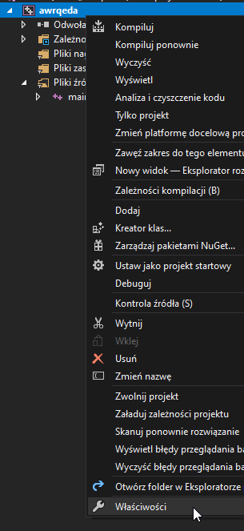
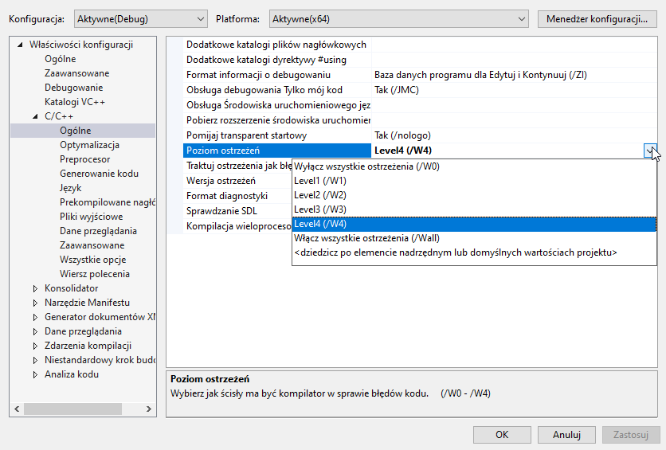
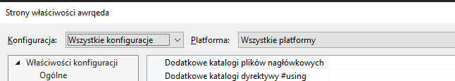

Kurs języka C++
Rozdział 2: Wprowadzenie do języka
Autor: Wojciech Olech
Wróć do poprzedniej części | Przejdź do następnej części


Spis treści
2.1: Tworzenie programów C++owych
W poprzedniej części kursu przedstawiłem kilka środowisk (oraz edytor), które pozwalają na pisanie programów w tytułowym języku. Narzędzia te pozwalają na tworzenie z kodu plików wykonywalnych, które możemy uruchomić na komputerze. A więc jak to się dzieje, że nasz kod jest zamieniany na program? I dlaczego nie możemy od razu uruchomić kodu, bez dodatkowych narzędzi?
Odpowiedź na drugie pytanie brzmi "Ponieważ C++ jest językiem kompilowanym". Istnieje kilka rodzajów języków programowania, niektóre - nazywane językami interpretowanymi - są wykonywane bezpośrednio przez program nazywany interpreterem, któremu podaje się kod a on wykonuje polecenia w nim zawarte. Przykładami takich języków są na przykład Python oraz JavaScript. Język C++ zalicza się do drugiego rodzaju, języków kompilowanych. Takie języki wymagają uprzedniego tłumaczenia na kod maszynowy, czyli instrukcje bezpośrednio zrozumiałe dla komputera.
Tłumaczenie kodu na plik wykonywalny to proces który nazywa się kompilacją. Do kompilacji jest nam potrzebny toolchain, czyli kompilator wraz z paroma dodatkowymi programami z których korzysta żeby wygenerować plik wykonywalny. Najbardziej popularnymi toolchainami do języka C++ są GCC, MinGW (port GCC dla Windowsa), MSVC (Microsoft Visual C++) oraz Clang.
IDE zazwyczaj ułatwiają obsługę kompilatora - przyciski w GUI pozwalają na budowanie (kompilację) programu oraz go uruchamianie, nie musimy się interesować co się dzieje pod spodem - przynajmniej do czasu. Jeśli korzystasz z IDE (Visual Studio, CLion, Qt Creator lub dowolne inne) to nie musisz interesować się niżej opisanym procesem ręcznej kompilacji. Sugeruję jednak przeczytać akapit "Dodatkowe flagi błędów"
Jeśli korzystamy z czystego edytora, to będziemy musieli samodzielnie kompilować program lub użyć plug-inu do tego. W kursie korzystam z Visual Studio Code i będę kompilować proste programy ręcznie, ale później przejdziemy do nauki CMake - systemu budowania który ułatwi tworzenie projektów C++owch.
Żeby skompilować program z użyciem toolchaina MinGW lub GCC, należy wywołać
program g++ z linii poleceń, z odpowiednimi argumentami. Przykładowo
g++ program.cpp -o program.exe
oznacza "Skompiluj plik program.cpp i wynik wypluj do pliku program.exe". Jeśli nie
podamy parametru -o nazwaprogramu.exe, to domyślnie program będzie mieć nazwę
a.exe
2.1.1: Dodatkowe flagi błędów
Dodatkowo, możemy kazać kompilatorowi dokładniej sprawdzać nasz kod przed jego kompilacją, co dość często pozwala diagnozować niewidoczne na pierwszy rzut oka błędy, które mogą być dość ciężkie do znalezienia i naprawienia dla niewprawionego programisty. Dlatego polecam zmienić domyślny poziom ostrzeżeń dla projektów. Poniżej zamieszcam instrukcje jak to zrobić, dla IDE i edytorów które polecałem w pierwszej części.
2.1.1.1: Visual Studio Community 2019
W Visual Studio,ustawienia tej opcji można znaleźć klikając prawym przyciskiem na projekt, wchodząc we "Właściwości", a następnie w zakładkę "C/C++ -> Ogólne". Interesuje nas opcja "Poziom ostrzeżeń". Ja używam W4, ponieważ jest to zalecany przez Microsoft poziom ostrzeżeń dla nowych projektów.


Należy pamiętać, że zostanie to ustawione tylko dla aktualnie obowiązującej konfiguracji (widocznej na górze okienka ustawień projektu - u mnie, Debug/x64). Jeśli chcemy żeby obowiązywało to dla całego projektu, niezależnie od konfiguracji, należy zmienić te opcje na "Wszystkie konfiguracje/Wszystkie platformy" i dopiero wtedy zmienić ustawienia poziomu ostrzeżeń.

2.1.1.2: JetBrains CLion oraz Qt Creator (CMake)
W środowisku CLion i Qt Creator korzystamy z CMake, dlatego instrukcja dla nich będzie taka sama. Zakładam że skonfigurowany toolchain to MinGW lub GCC, a nie MSVC!
Otwieramy plik CMakeLists.txt i pod linijką z funkcją add_executable dodajemy
target_compile_options(nazwapliku PRIVATE -Wall -Wextra -Wpedantic)
-Wall -Wextra -Wpedantic to trzy flagi które uruchamiają prawie najwyższy poziom
sprawdzania błędów w toolchainie MinGW i GCC.
Gdzie pod nazwapliku wstawiamy pierwszy argument podany do funkcji
add_executable, czyli. nazwę pliku wykonywalnego bez rozszerzenia.
Przykładowy plik CMakeLists.txt:
cmake_minimum_required(VERSION 3.14)
project(HelloWorld)
set(CMAKE_CXX_STANDARD 14)
add_executable(hello main.cpp)
target_compile_options(hello PRIVATE -Wall -Wextra -Wpedantic)
Jeśli korzystamy z toolchaina MSVC, to flagi -Wall -Wextra -Wpedantic należy
zamienić na /W4 /WX.
2.1.1.3: Visual Studio Code (kompilacja ręczna)
Tutaj sytuacja będzie wyglądać nieco podobnie jak w CMake, ale flagi podamy bezpośrednio poprzez linię poleceń. Żeby skompilować program z rozszerzonym sprawdzaniem kodu, używamy polecenia
g++ -Wall -Wextra -Wpedantic program.cpp -o program.exe
Gdzie, rzecz jasna, zamieniamy program.cpp na nazwę swojego pliku z kodem, a
program.exe na nazwę pliku wykonywalnego jaki chcemy dostać.
W sam szczegóły procesu kompilacji i to co się w nim dzieje zagłębimy się w późniejszej części kursu, ponieważ nie jest on w tej chwili istotny.
2.2: Hello, world!
Naszym pierwszym programem będzie typowy "Hello, world!", program którego jedynym zadaniem będzie wypisanie tej sentencji na ekranie w celu sprawdzenia czy nasze środowisko działa poprawnie. Może on wyglądać następująco:
#include <iostream> int main() { std::cout << "Hello, world!\n"; return 0; }
Jeśli jesteśmy w stanie go skompilować i uruchomić, to oznacza że nasze środowisko powinno działać poprawnie.
Co składa się na ten programik?
-
#include <iostream>-#includeto polecenie które dołącza podany plik z kodem do aktualnego pliku.iostreamto biblioteka, która zawiera narzędzia do pracy ze strumieniami wejścia i wyjścia, my używamystd::coutktóry pozwala wypisywać tekst na wyjście konsoli. -
int main()- jest to definicja funkcjimain. Funkcjamainto punkt startowy każdego programu (tzw. entry point), od niej program zaczyna się wykonywać i bez niej nie będziemy w stanie go skompilować. Ciało (zawartość, kod) funkcji jest zawarte w klamrach{}. -
std::cout << "Hello, world!\n";- To wyrażenie wypisuje nam tekstHello, world!na terminal.std::coutto strumień wyjścia, czyli obiekt za pomocą którego możemy wypisywać dane do terminala. Żeby to zrobić, używamy operatora<<, za którym umieszczamy dane które chcemy zobaczyć w terminalu."Hello, world!\n"to łańcuch znaków, czyli po prostu tekst. W języku C++ tekst należy trzymać w podwójnych cudzysłowiach ("").
Zauważ, że na końcu znajduje się\n- nie jest to jednak wypisywane w konsoli, kiedy uruchamiasz program. Dzieje się tak dlatego, że jest to tak zwany znak nowej linii. Umieszczenie go w łańcuchu znaków który chcemy gdzieś wypisać, spowoduje ze zostanie zamieniony na nową linię. Umieść ten znak w środku słowa "Hello" i zobacz co się stanie po kompilacji i uruchomieniu programu!- Każde wyrażenie w języku C++ należy kończyć
średnikiem (
;)
-
return 0;oznacza wyjście z funkcjimaini zwrócenie z niej wartości0. Domyślnie, jeśli0zostanie zwrócone z funkcjimain, oznacza to że program wykonał się poprawnie.
Wróć do poprzedniej części | Przejdź do następnej części